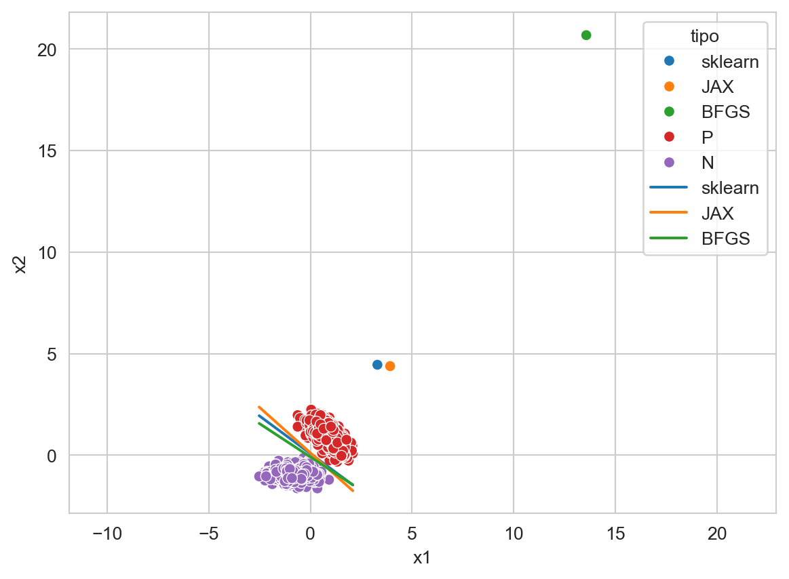

from sklearn.linear_model import LogisticRegression
from sklearn.preprocessing import StandardScaler, minmax_scale
from scipy.stats import multivariate_normal
from jax import grad, jit, value_and_grad, random
from jax.scipy.optimize import minimize
import jax.lax as lax
import jax.numpy as jnp
from matplotlib import pylab as plt
import numpy as np
import pandas as pd
import seaborn as sns10 Optimización
El objetivo de la unidad es conocer y aplicar el método de Descenso de Gradiente y Propagación hacia Atrás par estimar los parámetros de modelos de clasificación y regresión.
10.1 Paquetes usados
10.2 Introducción
Existen diferentes modelos de clasificación y regresión donde no es posible encontrar una solución analítica para estimar los parámetros, por ejemplo en Regresión Logística (Sección 9.5). Es en este escenario donde se voltea a métodos de optimización iterativos para calcular los parámetros.
En esta unidad se describe posiblemente el método de optimización más conocido que es Descenso de Gradiente. Este método como su nombre lo indica utiliza el gradiente como su ingrediente principal; se describirá como se puede calcular el gradiente utilizando un método gráfico y como este método naturalmente realiza Propagación hacia Atrás.
10.3 Descenso por Gradiente
En un modelo de clasificación y regresión interesa encontrar un vector de parámetros, \(\mathbf w^{*},\) que minimicen una función de error, \(E,\) de la siguiente manera:
\[ \mathbf w^{*} = \textsf{argmin}_{\mathbf w} E(\mathbf w \mid \mathcal D). \]
En el caso de que \(E(\mathbf w \mid \mathcal D)\) sea una función diferenciable, el gradiente está dado por:
\[ \nabla_{\mathbf w} E(\mathbf w \mid \mathcal D) = [\frac{\partial E}{\partial \mathbf w_1}, \frac{\partial E}{\partial \mathbf w_2}, \ldots]^\intercal. \]
La idea general es tomar la dirección opuesta al gradiente para encontrar el mínimo de la función. Entonces el cambio de parámetro está dado por
\[ \begin{split} \Delta \mathbf w &= - \eta \nabla_{\mathbf w} E\\ \mathbf w^{t+1} &= \mathbf w^{t-1} + \Delta \mathbf w \\ &= \mathbf w^{t-1} - \eta \nabla_{\mathbf w} E \end{split} \]
10.3.1 Ejemplo - Regresión Lineal
Suponiendo que se quieren estimar los parámetros de la siguiente ecuación lineal: \(f(x) = a x + b,\) para lo cual se tiene un conjunto de entrenamiento en el intervalo \(x=[-10, 10],\) generado con los parámetros \(a=2.3\) y \(b=-3.\) Importante no olvidar que los parámetros \(a=2.3\) y \(b=-3\) son desconocidos y se quieren estimar usando Descenso por Gradiente y también es importante mencionar que para este problema en particular es posible tener una solución analítica para estimar los parámetros.
El primer paso es definir la función de error \(E(a, b \mid \mathcal D),\) en problemas de regresión una función de error viable es: \(E(a, b \mid \mathcal D) = \sum_{(x, y) \in \mathcal D} (y - f(x))^2.\)
La regla para actualizar los valores iniciales es: \(w = w - \eta \nabla_w E\); por lo que se procede a calcular \(\nabla_w E\) donde \(w\) corresponde a los parámetros \(a\) y \(b\).
\[ \begin{split} \frac{\partial E}{\partial w} &= \frac{\partial}{\partial w} \sum (y - f(x))^2 \\ &= 2 \sum (y - f(x)) \frac{\partial}{\partial w} (y - f(x)) \\ &= - 2 \sum (y - f(x)) \frac{\partial}{\partial w} f(x) \end{split} \]
donde \(\frac{\partial}{\partial a} f(x) = x\) y \(\frac{\partial}{\partial b} f(x) = 1.0\) Las ecuaciones para actualizar \(a\) y \(b\) serían:
\[ \begin{split} e(y, x) &= y - f(x) \\ a &= a + 2 \eta \sum_{(x, y) \in \mathcal D} e(y, x) x \\ b &= b + 2 \eta \sum_{(x, y) \in \mathcal D} e(y, x) \end{split} \]
Con el objetivo de visualizar descenso por gradiente y completar el ejemplo anterior, el siguiente código implementa el proceso de optimización mencionado. Lo primero es generar el conjunto de entrenamiento.
x = np.linspace(-10, 10, 50)
y = 2.3 * x - 3El proceso inicia con valores aleatorios de \(a\) y \(b\), estos valores podrían ser \(5.3\) y \(-5.1,\) además se utilizará una \(\eta=0.0001\), se guardarán todos los puntos visitados en la lista D. Las variables y valores iniciales quedarían como:
a = 5.3
b = -5.1
delta = np.inf
eta = 0.0001
D = [(a, b)]El siguiente ciclo realiza la iteración del proceso de optimización y se detienen cuando los valores estimados varían poco entre dos iteraciones consecutivas, en particular cuando en promedio el cambio en las constantes sea menor a \(0.0001\).
while delta > 0.0001:
hy = a * x + b
e = (y - hy)
a = a + 2 * eta * (e * x).sum()
b = b + 2 * eta * e.sum()
D.append((a, b))
delta = np.fabs(np.array(D[-1]) - np.array(D[-2])).mean()En la Figura 10.1 se muestra el camino que siguieron los parámetros hasta llegar a los parámetros que generaron el problema. Los parámetros que generaron el problema se encuentran marcados en negro.
Código
df = pd.DataFrame(np.array(D), columns=['a', 'b'])
_ = np.atleast_2d(np.log(np.arange(1, df.shape[0] + 1))).T
df['iteración %'] = minmax_scale(_).flatten()
sns.relplot(data=df, kind='scatter', x='a', y='b', hue='iteración %')
_ = plt.tight_layout()10.4 Diferenciación Automática
No en todos los casos es posible encontrar una ecuación cerrada para actualizar los parámetros; también el trabajo manual que se requiere para encontrar la solución analítica es considerable y depende de la complejidad de la función objetivo que se quiere derivar. Observando el procedimiento para actualizar los parámetros, i.e., \(\mathbf w^{t+1} = w^{t-1} - \eta \nabla_{\mathbf w} E\), se concluye que se requiere evaluar \(\nabla_{\mathbf w} E\) en un punto en particular, entonces, para solucionar el problema, es suficiente contar con un procedimiento que permita conocer el valor de \(\nabla_{\mathbf w} E\) en cualquier punto deseado, y en particular no es necesario conocer la solución analítica de \(\nabla_{\mathbf w} E.\) Al procedimiento que encuentra el valor de la derivada de cualquier función en un punto de manera automática se le conoce como diferenciación automática.
10.4.1 Una Variable
Se puede entender el proceso de diferenciación automática siguiendo un par de ejemplos. Sea \(f(x) = x^2,\) en este caso \(f'(x) = 2x.\) Ahora considerando que se quiere evaluar \(f'(2.5)\), se sabe que \(f'(2.5)=5,\) pero también se puede generar un programa donde en la primera fase se calcule \(f(2.5)=(2.5)^2\) y al momento de calcular \(f\) se guarde en un espacio asociado a \(f\) el valor de \(f'(2.5).\) es decir \(5\). Se puede observar que este procedimiento soluciona este problema simple para cualquier función de una variable.
La librería JAX permite hacer diferenciación automática en Python. Siguiendo el ejemplo anterior, se genera la función \(f(x) = x^2\) con el siguiente código
def sq(x):
return x**2Esta función se puede evaluar como sq(2.5); lo interesante es que sq se puede componer con la función grad para calcular la derivada de la siguiente manera.
res = grad(sq)(2.5)Ejecutando el código anterior se obtiene \(5\), grad internamente guarda \(5\), grad asociado a sq.
Ahora en el caso de una composición, por ejemplo, sea \(g(x)=\sin(x)\) y se desea conocer \(\frac{d}{dx} g(f(x)),\) siguiendo el mismo principio primero se evalúa \(f(2.5)\) y se guarda asociado a \(f\) el valor de \(5\) que corresponde a \(f',\) después se evalúa \(g(5)\) y se guarda asociado a \(g\) el valor \(\cos(2.5^2).\) Ahora para conocer el valor de \(\frac{d}{dx} g(f(2.5))\) se camina en el sentido inverso multiplicando todos los valores guardados, es decir, se multiplica \(5 \times \cos(2.5^2).\) Implementando este ejemplo en Python quedaría como:
def sin_sq(x):
return jnp.sin(sq(x))donde la función sin_sq tiene la composición de \(g \circ f.\) Ahora la derivada de esta composición en 2.5 se obtiene como grad(sin_sq)(2.5) obteniendo un valor de \(4.9972\).
10.4.2 Dos Variables
El ejemplo anterior se puede extender para cualquier composición de funciones, pero ese ejemplo no deja claro lo que pasaría con una función de dos o más variables, como por ejemplo, \(h(x, y) = x \times y.\) En este caso, el objetivo es calcular tanto \(\frac{d}{dx} h\) como \(\frac{d}{dy} h.\)
El procedimiento es similar, con el ingrediente extra de que se tiene que recordar la función y la posición del argumento, es decir, para \(h(2, 5)\) se asocia el valor \(\frac{d}{dx} h\) con el primer argumento de la función \(h\) y \(\frac{d}{dx} h\) con el segundo argumento de la función \(h\). Para \(h'(2, 5)\) se asocia el valor de \(5\) con el primer argumento de \(h\) y \(2\) con el segundo argumento de \(h.\) Se puede observar que los valores guardados corresponden a \(\frac{d}{dx}h(2, 5)=y=5\) y \(\frac{d}{dy}h(2, 5)=x=2.\) Escribiendo este ejemplo en Python quedaría como
def prod(x):
return x[0] * x[1]calculando la derivada como grad(prod)(jnp.array([2., 5.])) se obtiene [5., 2.] que corresponde a la derivada parcial en cada argumento.
10.4.3 Visualización
Una manera de visualizar este proceso de diferenciación automática es poniéndolo en un árbol de expresión, en la Figura 10.2 se muestra la ecuación \(ax^2+bx+c\). Dentro de cada nodo se observa el valor que se tiene que guardar para cualquier valor de \(a,b,c\) y \(x.\)
10.4.4 Regresión Lineal
En esta sección se realiza utilizando diferenciación automática el ejemplo de regresión lineal (Sección 10.3.1). Lo primero que se tiene que hacer es definir la función para la cual se quieren optimizar los parámetros. Esta función es \(ax + b\) la cual se define con el siguiente código. El primer argumento de la función son los parámetros y después viene los argumentos de la función que en este caso son los valores de \(x.\)
def func(params, x):
a, b = params
return a * x + bEl siguiente paso es definir la función de error, en este caso la función de error definida previamente es \(\sum_{i=1}^{N} (y_i - \hat y_i)^2\) tal y como se muestra en la siguiente función.
def error(params, x, y):
hy = func(params, x)
return lax.fori_loop(0, x.shape[0],
lambda i, acc: acc + (y[i] - hy[i])**2,
0)Finalmente, se actualizan los parámetros siguiendo un procedimiento equivalente al mostrado anteriormente. La primera linea define el valor de \(\eta,\) el valor de la variable delta indica el término del ciclo, la tercera línea define los parámetros iniciales (params), la siguiente guarda los todos los puntos visitados (cuarta línea) y la quinta línea deriva la función de error para calcular el gradiente. La primera instrucción dentro del ciclo actualiza los parámetros.
eta = 0.0001
delta = np.inf
params = jnp.array([5.3, -5.1])
x = jnp.array(x)
y = jnp.array(y)
D = [params]
error_grad = grad(error)
while delta > 0.0001:
params -= eta * error_grad(params, x, y)
D.append(params)
delta = jnp.fabs(D[-1] - D[-2]).mean()10.5 Regresión Logística
En esta sección, se presenta la implementación de Regresión Logística (Sección 9.5) utilizando diferenciación automática.
El método se probará en los datos generados por dos normales en \(\mathbb R^2\) que se generan con las siguientes instrucciones.
X_1 = multivariate_normal(mean=[15, 20], cov=[[3, -3], [-3, 8]]).rvs(1000)
X_2 = multivariate_normal(mean=[8, 8], cov=[[4, 0], [0, 2]]).rvs(1000)
T = np.concatenate((X_1, X_2))
normalize = StandardScaler().fit(T)
T = jnp.array(normalize.transform(T))
y_t = jnp.array([1] * X_1.shape[0] + [0] * X_2.shape[0])Siguiendo los pasos utilizados en el ejemplo anterior, la primera función a implementar es el model, es decir la función sigmoide, i.e., \(\textsf{sigmoid}(\mathbf x) = \frac{1}{1 + \exp(- (\mathbf w \cdot \mathbf x + w_0))}.\)
def modelo(params, x):
_ = jnp.exp(-(jnp.dot(x, params[:2]) + params[-1]))
return 1 / (1 + _)El siguiente paso es implementar la función de error que guía el proceso de optimización, en el caso de regresión logística de dos clases la función de error corresponde a la media de la Entropía Cruzada (Ecuación 9.2). Esta función se implementa en dos pasos, primero se calcula la entropía cruzada usando el siguiente procedimiento. Donde la primera línea verifica selecciona si se trata de la clase positiva (\(1\)) o de la clase negativa \(0\) y calcula el \(\log \hat y\) o \(\log (1 - \hat y)\) respectivamente.
def entropia_cruzada(y, hy):
_ = lax.cond(y == 1, lambda w: jnp.log(w), lambda w: jnp.log(1 - w), hy)
return lax.cond(_ == -jnp.inf, lambda w: jnp.log(1e-6), lambda w: w, _)El segundo paso es calcular la media de la entropía cruzada de cada elemento de \(\mathcal D,\) esto se puede realizar con la siguiente función.
def suma_entropia_cruzada(params, x, y):
hy = modelo(params, x)
return - lax.fori_loop(0, y.shape[0],
lambda i, x: x + entropia_cruzada(y[i], hy[i]),
1) / y.shape[0]El paso final es actualizar los parámetros, en esta ocasión se utilizará la función value_and_grad que regresa la evaluación de la función así como la derivada, esto para poder desplegar como el error disminuye con el paso de las iteraciones. El código es similar al mostrado anteriormente. La diferencias son la forma en generar los parámetros iniciales, primeras tres líneas, el parámetro \(\eta\), que se itera por \(n=5000\) iteraciones y la función value_and_grad.
key = random.PRNGKey(0)
key, subkey = random.split(key)
params = random.normal(subkey, (3,)) * jnp.sqrt(2 / 2)
eta = 0.1
error = []
error_grad = value_and_grad(suma_entropia_cruzada)
for i in range(5000):
_, g = error_grad(params, T, y_t)
error.append(_)
params -= eta * gLa Figura 10.3 muestra como se reduce la media de la entropía cruzada con respecto al número de iteraciones, este error sigue bajando aunque la velocidad disminuye drasticamente.
Código
df = pd.DataFrame({'Iteración': np.arange(5000), 'error': np.array(error)})
sns.relplot(data=df, x='Iteración', y='error', kind='line')
_ = plt.tight_layout()Optimizando los parámetros de la regresión logística utilizando el procedimiento de diferenciación automática se obtiene [3.9203, 4.3832, -0.4768].
En Discriminantes Lineales (Capítulo 9) se presento el procedimiento para entrenar un clasificador logístico usando la siguiente instrucción.
lr = LogisticRegression().fit(T, y_t)Los parámetros son [3.2929, 4.4508, -0.3220]. El error en el conjunto se entrenamiento es se puede calcular de la siguiente manera. En comparación el error obtenido por diferenciación automática es \(0.0026\), por supuesto este puede variar cambiando el número de iteraciones.
_ = jnp.array([lr.coef_[0, 0], lr.coef_[0, 1], lr.intercept_[0]])
suma_entropia_cruzada(_, T, y_t)Array(0.00329172, dtype=float32)10.6 Actualización de Parámetros
Por supuesto la regla \(\mathbf w^{t+1} = \mathbf w^{t-1} - \eta \nabla_{\mathbf w} E\) para actualizar los parámetros \(\mathbf w\) no es única y existe una gama de métodos que se pueden seleccionar dependiendo de las características del problema. En particular regresión logística es una problema de optimización convexo, en este tipo de problemas un algoritmos para encontrar los parámetros es el BFGS. Por ejemplo el siguiente código utiliza este algoritmo para encontrar los parámetros de la regresión logística.
p = random.normal(subkey, (3,)) * jnp.sqrt(2 / 2)
res = minimize(suma_entropia_cruzada, p, args=(T, y_t), method='BFGS')Se observa como se usa la misma función de error (suma_entropia_cruzada) y los mismos parámetros iniciales. Los parámetros que se encuentran con este método son [13.5714, 20.6805, 1.9514] y tiene un error \(-0.0005\).
La Figura 10.4 muestra la función discriminantes obtenida por cada uno de los métodos, el método de diferenciación automática (JAX), el método de la librearía sklearn y el algoritmo BFGS. Se puede observar que el plano de sklearn y BFGS son más similares, esto no es sorpresa porque los dos métodos implementan el mismo método de optimización, es decir, BFGS. Por supuesto la implementaciones tiene algunas diferencias, que pueden ir desde el número de iteraciones y la forma de generar los parámetros iniciales. Si se escalan los parámetros \(\mathbf w\) para que tengan una longitud de \(1\) se observaría que sklearn y BFGS se tocan.
Código
W = [jnp.array([lr.coef_[0, 0], lr.coef_[0, 1], lr.intercept_[0]]), params, res.x]
g = []
for w, tipo in zip(W, ['sklearn', 'JAX', 'BFGS']):
w_1, w_2, w_0 = w
g += [dict(x1=float(x), x2=float(y), tipo=tipo)
for x, y in zip(T[:, 0], (-w_0 - w_1 * T[:, 0]) / w_2)]
# w_1, w_2, w_0 = w / np.linalg.norm(w) * 3
g.append(dict(x1=float(w_1), x2=float(w_2), clase=tipo))
df = pd.DataFrame(g + \
[dict(x1=x, x2=y, clase='P') for x, y in normalize.transform(X_1)] + \
[dict(x1=x, x2=y, clase='N') for x, y in normalize.transform(X_2)]
)
ax = sns.scatterplot(data=df, x='x1', y='x2', hue='clase', legend=True)
sns.lineplot(data=df, x='x1', y='x2',
ax=ax,
hue='tipo',
palette=sns.color_palette()[:3],
legend=True)
_ = ax.axis('equal')
